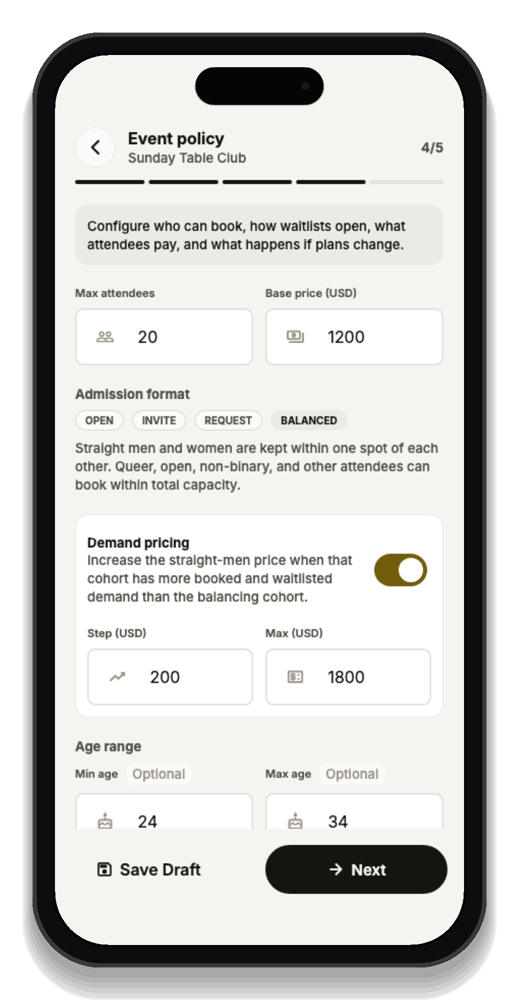
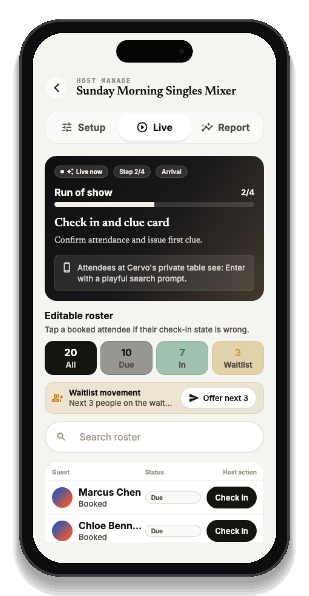
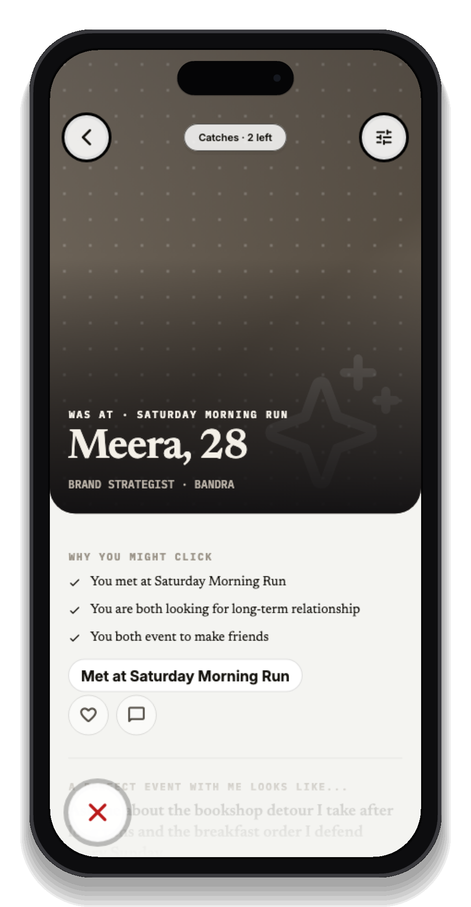
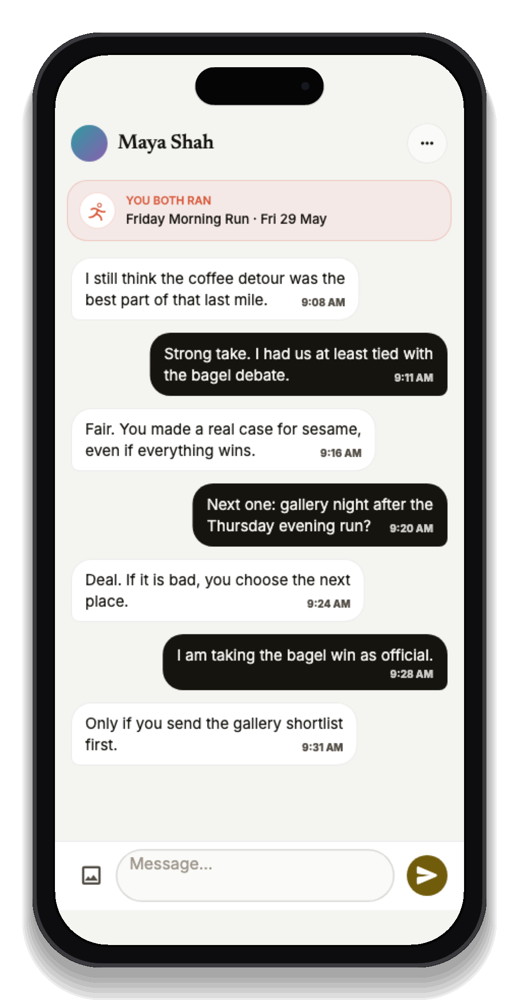
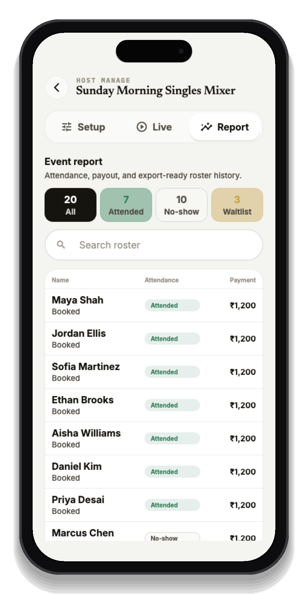

Too many tabs, too little signal.
Payment links, group chats, spreadsheets, manual approvals, awkward intros, and no real view of what happened afterward.
Catch is the booking, live hosting, and post-event matching layer for singles events. You control who joins, guide the moments that help people talk, and learn what made the event work.
Shape the roster
Guide the event
Open private catches
Learn what worked
Approve 4 more runners from the waitlist to keep pace groups even.
Hosts already know the hard part is not making a page and collecting names. The hard part is shaping the crowd, setting the tone, helping people start conversations, and knowing whether anyone actually connected after they left.
Payment links, group chats, spreadsheets, manual approvals, awkward intros, and no real view of what happened afterward.
Curate the roster, run the live event, open private interest, and use the results to make the next event stronger.
If you are moving your event, club, or venue night onto a new platform, the question is simple: will this help me fill the event, run it better, and make my next one stronger?
A post-event receipt should show the whole path from demand to actual connection, not just ticket sales.
Keep the arrival pods. Add one earlier arrival prompt. Open four more waitlist spots for the next run.
Show demand, confirmations, waitlist movement, payment status, and the signals that make the next invite sharper.
Show the host console, check-in flow, First Hello, groups, prompts, rotations, and host-help requests in the actual event.
Show attendance-gated follow-up, mutual matches, chats started, attendee feedback, and what those signals teach the host.
Show a premium attendee page, private interest by default, safety controls, clear setup support, and a first-event plan.
Catch is not just the signup page and not just the dating layer. It connects every part of the event that determines whether people meet.
Invite-only, request-to-join, capacity, waitlists, ratios, cohorts, payments, and host approval.
Check-in, arrival moments, small groups, prompts, rotations, host help, and safety controls.
Attendees catch the people they actually met. If interest is mutual, they match and can message.
See attendance, feedback, matches, chats, and simple recommendations.
Generic ticketing tools treat every attendee as interchangeable. Catch gives hosts granular control because singles events depend on who is there, how many spots are open, and what kind of mix the event needs.
Run private nights, member events, soft launches, or creator-led lists.
Review people before confirming a spot when the format needs curation.
Manage ratios, cohorts, event capacity, and waitlist movement.
Charge for premium formats or keep casual community events lightweight.

Event Success is a set of live hosting tools that help attendees arrive, mix, talk, and follow up without making the event feel forced. Hosts can choose the modules that fit the format.

Know who actually arrived before opening post-event matching.
Give attendees one simple arrival mission so the first interaction is easier.
Start people in pods instead of asking everyone to approach strangers.
Use light prompts, host-edited groups, partner rounds, or reveal moments when the format fits.
Let attendees privately ask for help meeting someone specific while the event is still live.
After the event, attendees privately catch the people they actually met. If interest is mutual, they match and can message with context from the event.


Catch gives hosts more than headcount. See what happened after the event: who checked in, how many people met more than one person, how many mutual matches formed, whether chats started, and one or two practical changes to try next time.

The same loop works across different social settings because the modules change with the event.
The fastest way to trust Catch is to run one real event with support. For founding hosts, the first event can be set up with you: event page, booking rules, invite links, roster plan, live flow, and the post-event report.
Format, capacity, invite rules, request flow, pricing, and waitlist logic.
Share one link with your community, members, venue list, or partners.
Check-in, prompts, First Hello, groups, host help, and post-event follow-up.
Demand, attendance, matches, chats, feedback, and next-event recommendations.
The best connections rarely start with a perfect profile. They start when two people show up to the same thing, notice each other, talk for a minute, and want a graceful way to continue.
Hosts already create those moments. Catch gives them the tools to make those moments happen more often, with less awkwardness, more privacy, and better feedback after every event.
For hosts, communities, venues, creators, run clubs, game nights, dinner clubs, and anyone building better ways for singles to meet.
Apply as a founding host